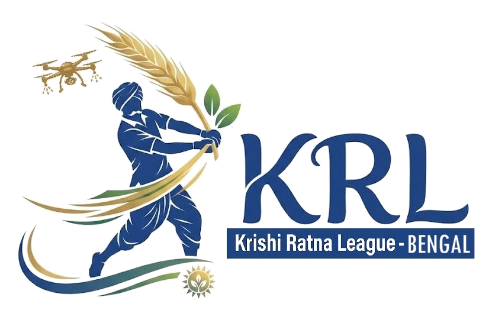

An invitation · Durga Puja 2026
Pravasi Krishi Bandhu
প্রবাসী কৃষি বন্ধু
You know the name of your village. Somewhere in it, a young woman or a young man is about to build a farm. This is an invitation to stand behind them — for one season, for one hundred thousand rupees, with your eyes open the whole way.
5,000Smart Integrated Farms in Season 1
294Assembly constituencies
₹3 crSeason 1 prize pool
1955Bharatiya Krishak Samaj founded
What it is
The Krishi Ratna League — a championship for farms, run in
the format that made cricket unmissable. Across West Bengal's 294 constituencies,
5,000 young women and men each build a Smart Integrated
Farm, mentored and graded through one season: Durga Puja 2026 to Durga Puja 2027.
Your part
You stand behind one of them — one named young person, in a
district you choose. You are shown three applicants and you pick who you
back. You are not buying anything and this is not a donation to a general fund.
The amount
₹1,00,000 for the season, as five monthly
instalments of ₹20,000. ₹90,000 goes to the farm. ₹10,000 — ten
per cent — runs the League: verification, mentoring, the platform, the prize pool.
What you see
A named farm and farmer. A dashboard with the activity log, photographs and
the expense ledger. Progress against every instalment. The farmer's own video messages. An
invitation to the Season 1 awards at Durga Puja 2027.
Agriculture in Bengal did not fail for want of
soil, or rain, or hands. It failed for want of prestige.
Pravasi Krishi Bandhu · pravasi-krishi-bandhu.vercel.app01